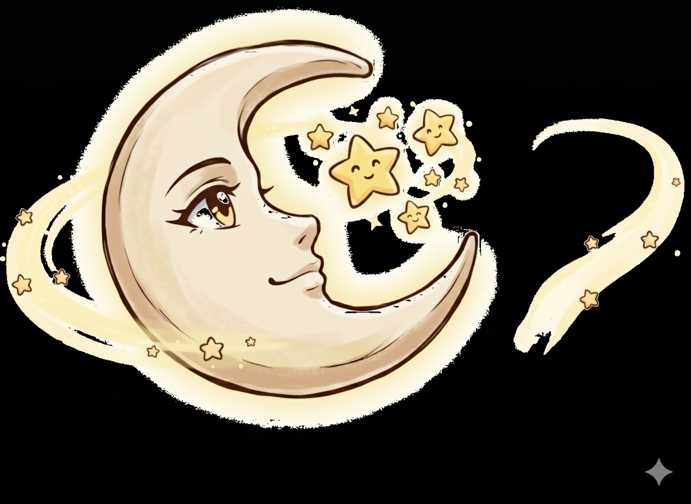

Oriuração cósmica, autoconhecimento e sabedoria ancestral através do Tarot e da Astrologia.
Orientação profunda para momentos de decisão, clareza nos caminhos do amor, carreira e energias do momento.
Agendar LeituraDescubra os segredos impressos no céu no momento exato do seu nascimento e compreenda sua essência e potencialidades.
Pedir Mapa